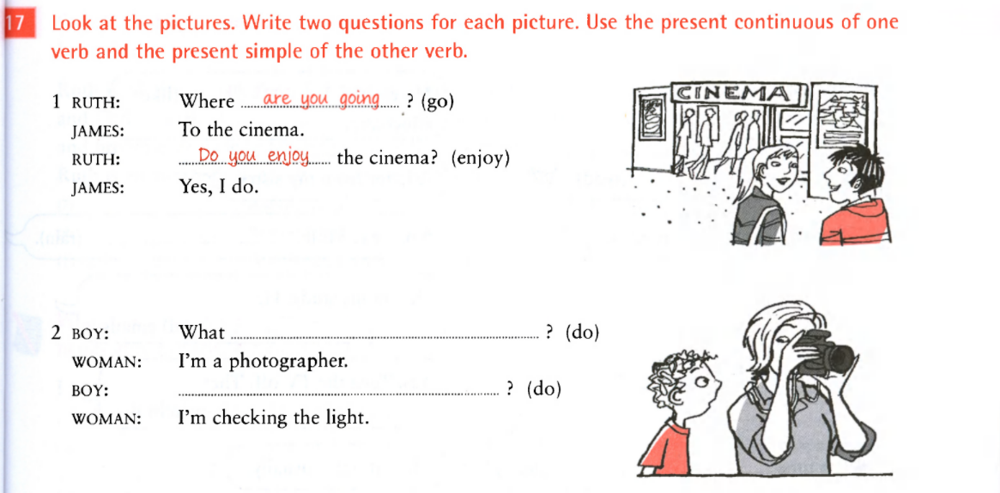
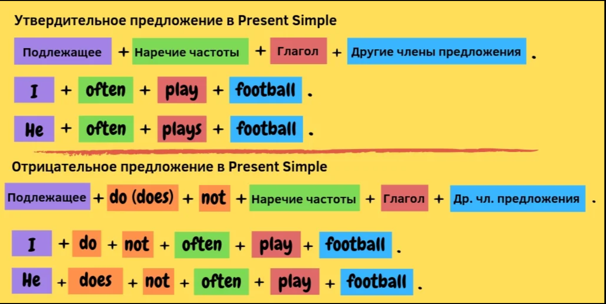
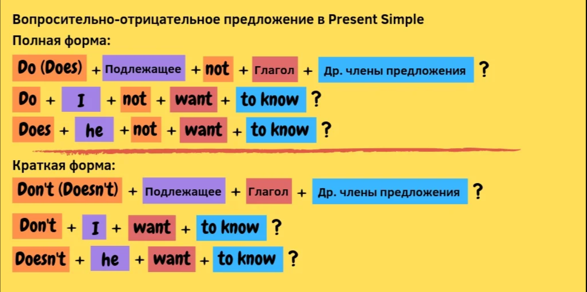
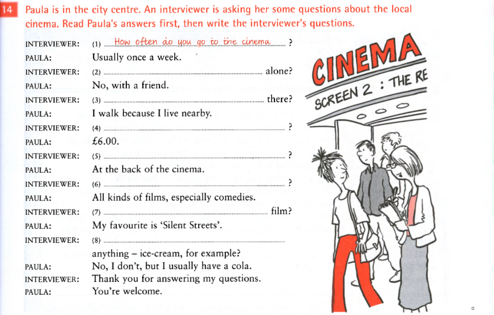

MAIN LINKS
You can download abridged books here: Abridged BooksJoin your personal Quizlet Course Quizlet
You can watch episodes and full movies HERE
You download translations of Russian Authors HERE
You watch films with subtitles HERE
26/09/2021
Задание: лексика в Quizlet и эпизод The Middle. Опционально - грамматика.Quizlet
to watch: Episodes on Decluttering
Задание по грамматике
Present Simple или Present Continuous

12/09/2021
Задание: лексика в Quizlet и эпизод чего-нибудь (на странице три видео, посмотреть можно в зависимости от желания/загрузки).Quizlet
to watch: Episodes on Decluttering
05/09/2021
Задание: лексика в Quizlet и эпизод сериала, если останется время, остальное в блоке на этой странице.Quizlet
units: Everyday Routine
to watch: Episodes on Health
PRESENT SIMPLE
 Задание по грамматике
В 9 предложениях есть ошибки, их нужно найти

Необходимо восстановить вопросы, которые были заданы Пауле
Статья